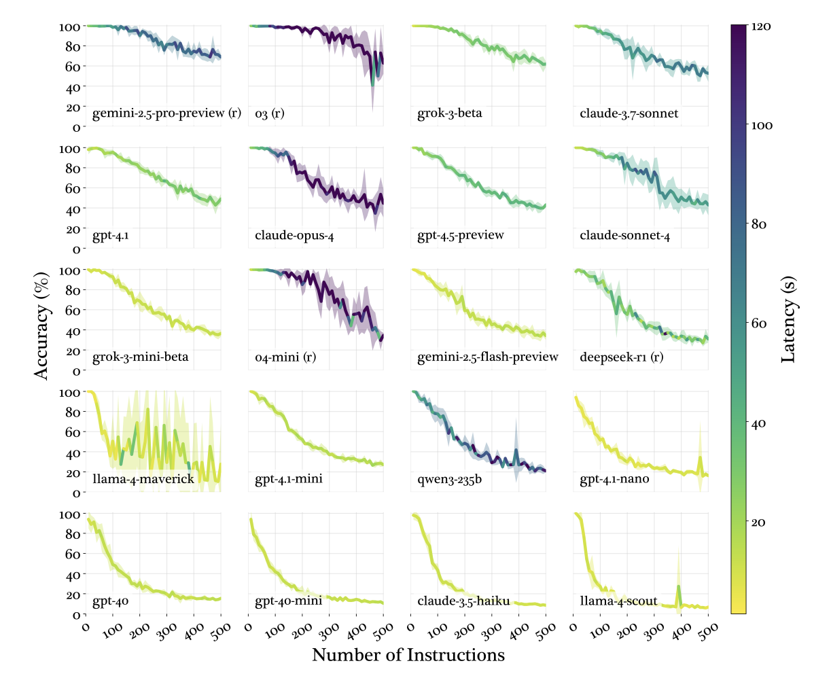

Important
클로드코드, 무작정 쓰다 보면 어느새 ‘토큰(비용) 폭탄’을 맞거나 엉뚱한 결과물만 얻게 됩니다. 영상에서 말씀드린 초보자들이 가장 많이 하는 세팅 실수 5가지와, 이를 완벽하게 해결하는 구체적인 액션 플랜을 정리했습니다.
당장 내 세팅과 비교해 보세요!
❌ 실수 1. 모든 지시를 ‘글로벌’에 때려 넣기 (토큰 낭비 주범)
모든 프로젝트에 공통으로 적용되는 글로벌 세팅에 구체적인 업무 지시까지 다 넣어두면, 클로드코드는 매번 불필요한 정보까지 읽어 들여 토큰을 크게 낭비합니다.
-
✅ 세비아의 해결책: 프로젝트별 분리 세팅
-
글로벌 세팅: “항상 존댓말로 대답해”, “결과물은 마크다운으로 정리해” 같은 공통 규칙만 넣으세요.
-
프로젝트 세팅 (폴더별
**CLAUDE.md**): 해당 프로젝트의 특정 기술 스택, 현재 진행 중인 작업 목표 등 개별 규칙만 따로 작성하세요.
-
❌ 실수 2. “알아서 잘, 깔끔하게” 식의 모호한 지시
“좋은 코드 써줘”, “이거 분석해 줘” 같은 프롬프트는 AI가 방향을 잡지 못해 헛돌게 만들고 토큰만 잡아먹습니다.
-
✅ 세비아의 해결책: 구체적인 Before & After
-
👎 Bad: “이 웹사이트 코드 좀 예쁘게 수정해 줘.”
-
👍 Good: “이 웹사이트의 메인 페이지 CSS를 수정해서, 모바일 화면(최대 너비 768px)에서 버튼 크기가 1.5배 커지도록 반응형으로 만들어 줘.”
-
❌ 실수 3. CLAUDE.md 파일에 수백 줄의 규칙 욱여넣기
규칙을 꼼꼼하게 적는답시고 CLAUDE.md (클로드코드 맞춤 설정 파일)를 길게 쓰면, AI가 핵심을 놓치고 오히려 중요한 지시를 무시하게 됩니다. 길다고 절대 좋은 게 아닙니다.

-
✅ 세비아의 해결책: 100줄 이하의 핵심 요약 원칙
-
불필요한 배경 설명은 과감히 삭제하세요.
-
코드 아키텍처, 코딩 컨벤션(명명 규칙), 폴더 구조 등 ‘절대 틀리면 안 되는 핵심 규칙’만 간결한 개조식(글머리 기호)으로 작성하세요.
-
❌ 실수 4. “금지 목록(Do Not)” 안 적기
AI에게 “무엇을 해라”라고 말하는 것만큼 “무엇을 절대 하지 마라”라고 명시하는 것이 퀄리티 컨트롤에 훨씬 중요합니다.
-
✅ 세비아의 해결책: 금지 목록 예시
아래 내용을
CLAUDE.md에 추가해 보세요.◦ Do Not: 사용자의 명시적인 허락 없이 기존 파일을 임의로 삭제하거나 덮어쓰지 마세요.
◦ Do Not: 영어로 답변하지 마세요. 반드시 한국어로 설명하세요.
◦ Do Not: 잘 모르는 에러에 대해 임의로 추측해서 코드를 짜지 말고, 모른다고 먼저 말하세요.
❌ 실수 5. 컨텍스트(Context) 용량 관리 안 하기
클로드코드는 대화가 길어질수록 이전 대화 내용을 계속 처음부터 끝까지 다시 읽습니다. 이게 바로 ‘토큰 폭탄’의 원인입니다.
-
✅ 세비아의 해결책:
**/context**명령어 습관화-
작업 중간중간 터미널에
/context를 입력해 현재 컨텍스트 사용량을 체크하세요. -
용량이 60~70%를 넘어가기 시작하면 주의가 필요합니다.
-
주제가 바뀌거나 용량이 찼다면, 미련 없이 기존 터미널을 닫고 새 터미널을 열거나
/clear을 입력해 대화 기록을 초기화하여 새롭게 시작하세요.
-
🚀 클로드코드, 이제 제대로 써먹어 볼까요?
오늘 공유해 드린 5가지 원칙만 지켜도 클로드코드 사용 효율이 200% 이상 올라갑니다.
**앞으로 더 많은 AI 인사이트와 트렌드는?**
**@sebia.ai 팔로우하고 함께 앞서 나가요!**